图文混排是设计中极为重要的一项技术，同时它也极难达到完美的境界。要在网页首屏中呈现出完美的混排效果，你需要一张完美的照片，和足够出彩的文字排版。如果你准备接受挑战，那么请看接下来这10条技巧吧。
1、强化对比
Packdog
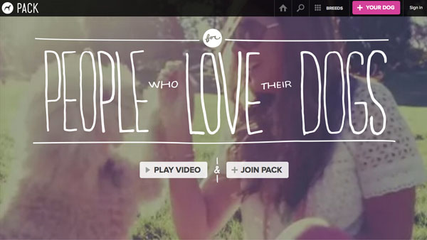
Wearetelegraph
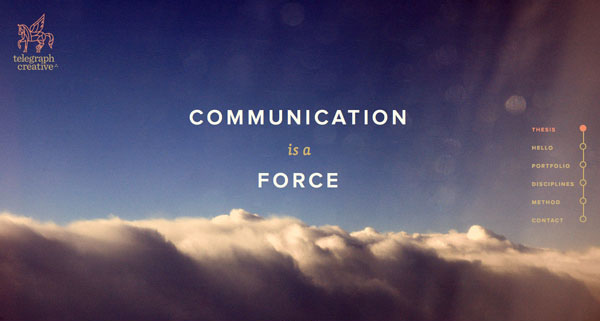
首先网页首屏中的文字必须具备可读性才行，所以你需要确认文字与背景之间的色彩搭配能让用户看得清楚。当你选择一个暗色调的背景，那么你需要使用白色或者浅色的的文字，而当背景比较素雅的时候，文字可以使用深色，这就是我所说的强化对比。
当然，对比不仅限于色彩，文字同样存在对比。文字与图像相互配合，才能达到出人意表的效果。例如第一个案例，Packdog网站的设计，大图作为背景，用色浓郁，文字则正好相反，轻薄而大小错落。这些对比强烈的元素组合在一起令人印象深刻。
2、令文字成为图片的一部分
meandmyselfportfolio
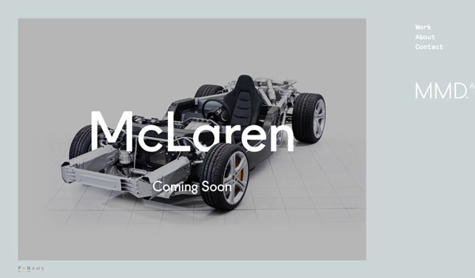
toast
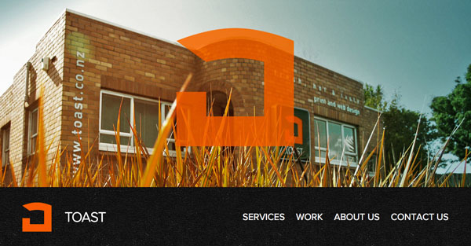
有的时候你需要让文字成为图片的一部分，甚至让文字成为图像本身来达到效果。当然这种处理方式所需的条件比较苛刻。要么你使用足够清爽简单的图片来和文字进行搭配，或者使用原本就包含图片的文字（当然，你也可以将文字妥妥儿地P到图片中的主体上，文字的角度、形变和纹理一定要融入进去）。
3、沿着视觉流向排布
Bradhogan
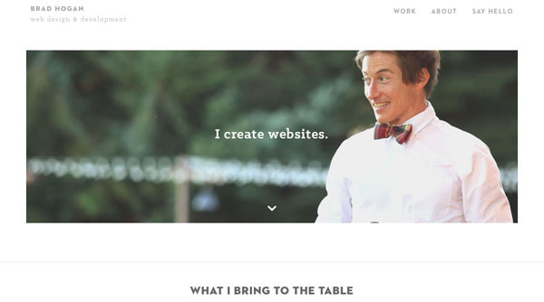
Workdiary
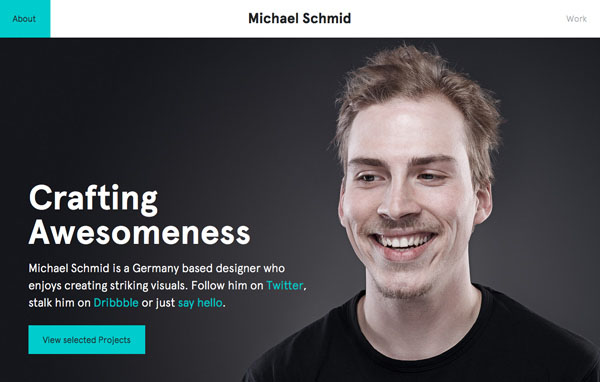
沿着视觉流向来排布信息是一项重要的技巧。文字与图片发生逻辑关系，两者相辅相承，所以此时文字不能覆盖到图片的主体部分――比如需要展示的人物，或者产品本身。
信息按照视觉流向排布的时候，图片中的主体会引导你去观看文字信息。这两个案例都使用了这种技巧，文字都是沿着人物的面目朝向或者眼神指向来排布的。
4、模糊背景
helloniche
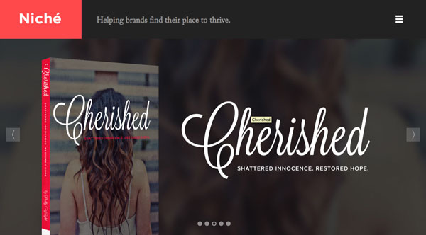
wallmob
模糊背景是一种非常简单的处理手法。PS可以很轻易地模糊照片，而照片的模糊带来的直接效果就是让产品本身更加突出，以上的两个案例就是如此。
5、将文字置于框中
tradestoneconfections
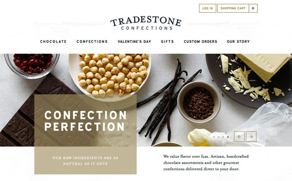
tnvacation
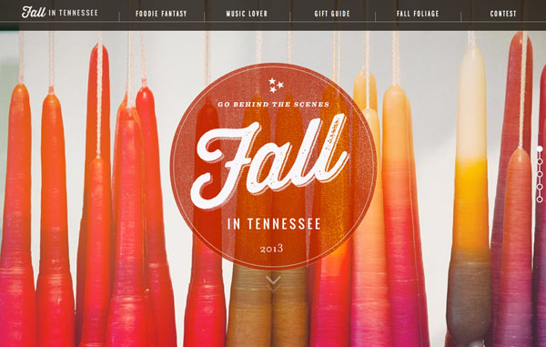
当照片中光影交叠，色彩丰富的时候，将文字置于框中会是个不错的选择。根据文字和图片的形态选择圆框或者方框，然后设置好色彩，确保对比度。适当地调整透明度，让框、文字于图片完美地糅合到一起。
6、将文字置于背景中
squareup
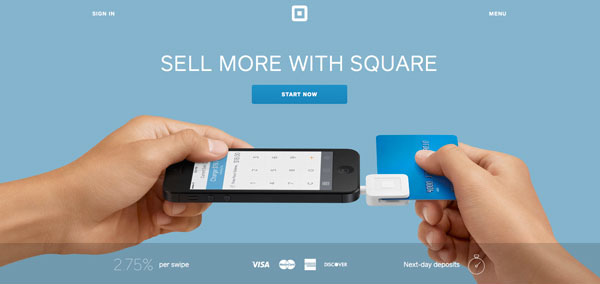
caitlinwicker
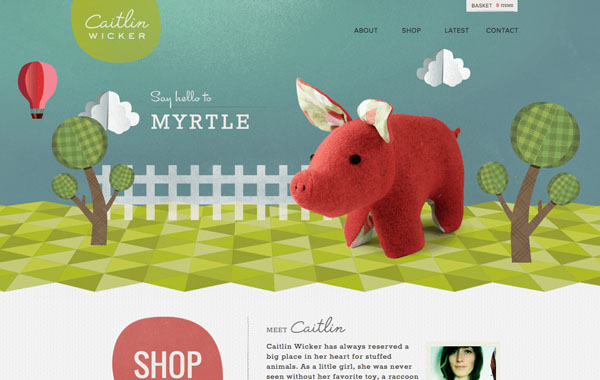
比起置于前景的文字，将文字融入背景也许是更有意思的”花招”。文字常常易于融入到纯色背景中，还能确保可读性。并不需要太复杂的技巧和改动，你就可以让文字自然地融入背景，你所需要的仅仅只是微妙的阴影效果，正如上述的案例。
7、放大
plainmade
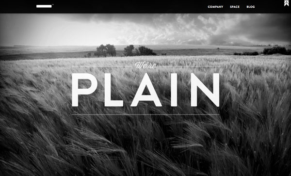
tinyfootprintcoffee
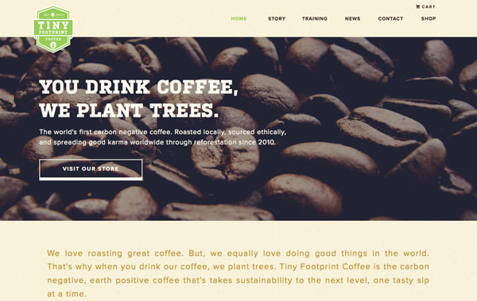
当你不知道要怎么处理素材的时候，试着放大吧。这不仅仅针对图片，它还适用于文字的处理，放大的元素更容易抓住用户的眼球。正如上述的两个案例，放大的咖啡豆强化了对比，放大的文字则极具冲击力。
8、色彩对比
knucklesindustries
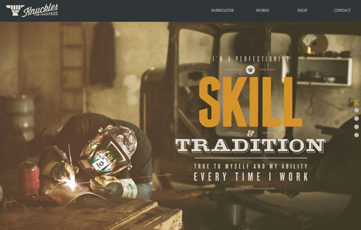
storyandheart
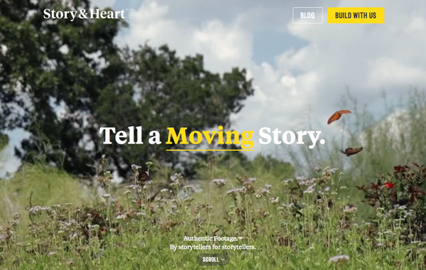
通过色彩对比可以提高整个首屏的趣味性。以上的两个案例中，一个降低了背景图的色彩对比度，令文字更加突出，而另一个则让这种对比出现在文字内。两种方法同样有效。
9、调色
winshape
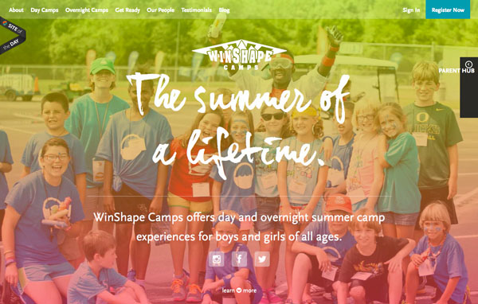
brandvillage
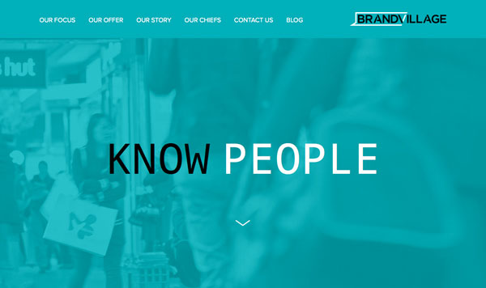
通过调色让照片的色彩更适宜文字呈现是最近越来越流行的玩儿法。虽然这种方式有点投机取巧，但是它可能带来极其惊艳的效果。
调色的时候，尽可能选择与图片相近的色彩来调整，确保图片中的内容能够透过又不影响文字的阅读就好了。要掌握好这一”花招”你可能需要尝试不同的色彩，”玩坏”好几张图片才行。不知道用什么色彩？试试从你最喜欢的颜色开始吧。
10、简化
keepsareal
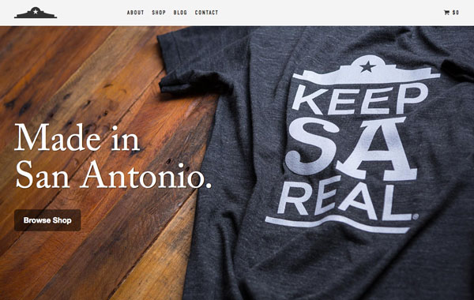
joshcohen
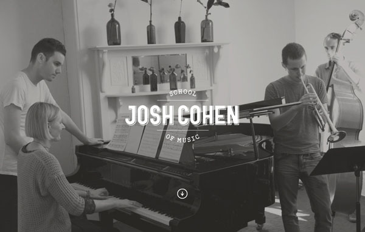
那些历久弥新的平面设计向我们证明了”保持简洁”也是一种有效的设计手段。玩儿太多花哨可能会适得其反，简洁地将图文放到一起可能就很和谐了。处理图像的时候，使用简单直观的排版和清晰明了的照片，确保照片是最重要的组成部分，文字与图片主体之间没有阻碍和干扰，并且文字清晰可读。
参考这十大技巧，动手试试吧！

 网友投稿
网友投稿- 我们一直在进步